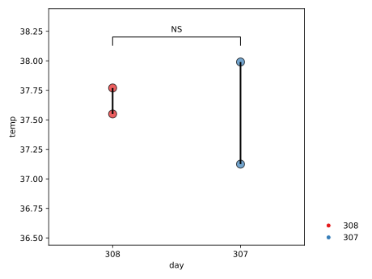
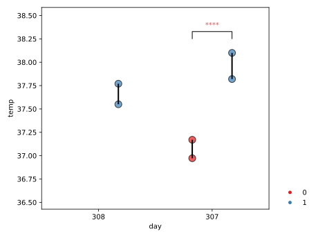
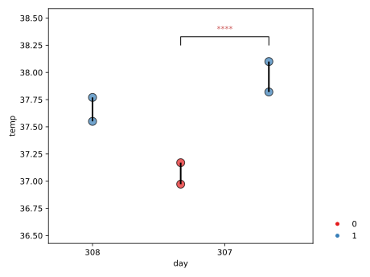
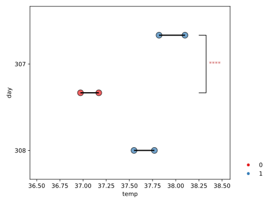

Bioplots.lollipop¶
-
Bioplots.lollipop(df, x, y, subgroup=None, order='median', subgroup_order='median', rm_empty_space=False, colors='Set1', ax=None, split_group_by_line=False, stat_anno=True, stat_test='t-test', stat_display_cutoff=0.05, stat_anno_by_star=True, color_stat_sig=True, endpoints_kws={'alpha': 0.7, 's': 100, 'marker': 'o', 'edgecolor': 'k'}, legend_kws={'frameon': False, 'loc': (1.05, 0)}, stat_kws={})¶ Draw a lollipop plot to show interested feature distributions with respect to groups and subgroups.
- Parameters
- dfpandas.DataFrame
Dataset for plotting.
- x, y, subgroup, pair: str
names of variables in
df(subgroup and pairt is optional) Oriention of plot is inferred by the dtype ofxandycolumn indf. Ifxcolumn has categorical values, the plot will be vertical and vise versa.subgroupseparates variables within each individual group.pairconnects paired points by lines.- split_group_by_lineboolean, optional
Whether added reference line to separate groups. False by default.
- legend_kws: dict, optional
The paramters for customizing legend display.
matplotlib.axes.Axes.legend(). ‘frameon’ is set to be False by default.- stat_annoboolean or dict, optional
Whether annotate statistic significance on the plot. This value can either be automatically generated during plotting or customized by users (if a dict variable is passed into).
e.g:{'(group_1,group_2)':p_value,...}. True by default.- stat_teststr, optional
Options can be ‘t-test’, ‘wilcoxon’, or ‘mannwhitneyu’ (unequal N wilcoxon). ‘t-test’ by default.
- stat_anno_by_starbool, optional
Whether use the significant label instead of real number. True by default.
- stat_display_cutoff: float,optional
Cutoff of visible statistic annotation. 0.05 by default.
- color_stat_sig: bool, optional
Whether color statistical text by their significance. True by default.
- colormatplotlib color, optional
Color for all of the elements Or a palette name. ‘Set1’ by default.
- axmatplotlib Axes, optional
Axes object to draw the plot onto, otherwise uses the current Axes.
- endpoints_kws: key, value mappings
The paramter is set for two endpoints on the lolipop. Default is
'alpha':0.7,'s':100,'marker':'o','edgecolor':'k'Other keyword arguments are passed through tomatplotlib.axes.Axes.scatter()
- Returns
- axmatplotlib Axes
Returns the Axes object with the plot drawn onto it.
See also
Examples
Draw a single vertical boxplot grouped by
tempvariable:>>> import Bioplots as bpt >>> df = bpt.get_rdataset('beaver') >>> df['day'] = df['day'].map(str) >>> df['activ'] = df['activ'].map(str) >>> ax = bpt.lollipop(df=df,x='day', y="temp")
Draw a vertical lollipop plot grouped by
tempandactivvariables:>>> ax = bpt.lollipop(df=df,x='day', y="temp",subgroup='activ')
Remove the empty space on the frist group:
>>> ax = bpt.lollipop(df=df,x='day', y="temp",subgroup='activ', ... rm_empty_space=True)
Horizontal plot
>>> ax = bpt.lollipop(df=df,y='day', x="temp",subgroup='activ', ... rm_empty_space=True)
